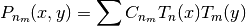

Bases: astropy.modeling.polynomial.OrthoPolynomialBase
2D Chebyshev polynomial of the 1st kind.
It is defined as

| Parameters: | x_degree : int
y_degree : int
x_domain : list or None
y_domain : list or None
x_window : list or None
y_window : list or None
param_dim : int
**params : dict
fixed: a dict :
tied: dict :
bounds: dict : eqcons: list :
ineqcons : list
|
|---|
Methods Summary
| deriv(x, y, *params) | Derivatives with respect to the coefficients. |
Methods Documentation
Derivatives with respect to the coefficients.
This is an array with Chebyshev polynomials:
Tx0Ty0 Tx1Ty0...TxnTy0...TxnTym
| Parameters: | x : ndarray
y : ndarray
params : throw away parameter
|
|---|---|
| Returns: | result : ndarray
|